Neural Networks learn Bloom Filters
Overview
We train a tiny ReLU network to output sparse top-\(k\) distributions over a vocabulary much larger than its residual dimension. The trained network seems to converge to a mechanism closely resembling a Bloom filter: tokens are assigned sparse binary hashes, the hidden layer computes an approximate union indicator, and the output logits are linearly read from this union.
Here's what a small network trained on a toy version of the sparse top-\(k\) distribution task learns to use:
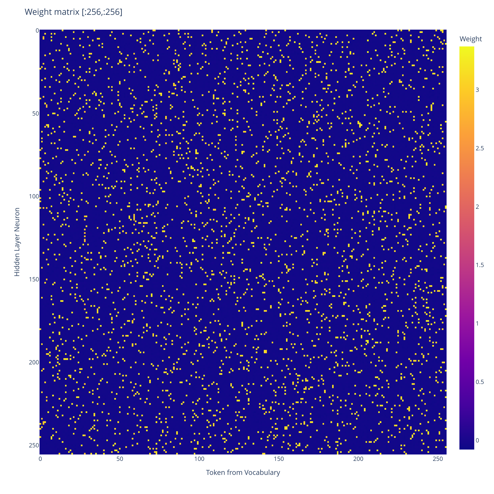
Weight matrix \(W_E\text{mlp}_{\text{in}}\)of a 1-layer ReLU network trained via gradient descent on the toy \(k\)-sparse distribution task below, for \(k=10\), \(d_{\text{model}} = 256\), \(d_{\text{vocab}} = 5000\). Truncated at first \(256\) tokens for visualisation purposes.
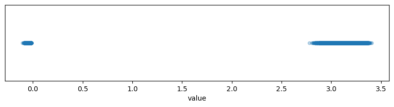
Plot of the range of values of \(W_E\text{mlp}_{\text{in}}\), it forms a bimodal distribution.
That's the input weight matrix of the trained network. Every entry is either \(\approx 0\) or \(\approx 3.0\). The network has effectively encoded a binary hash for each token - and as we'll show, this seems to enable the network to approximately simulate a Bloom filter, and so output the correct set of top-\(k\) tokens with high probability.
We provide a theoretical construction showing how to set the weights to exactly implement a Bloom filter. The real network seems to learn to do something similar, and seems to behaviourally act like a Bloom filter, but while we provide a fair bit of mechanistic evidence, we don't yet have a complete mechanistic explanation of the trained network.
Additionally, this is just a toy network, so it doesn't directly tell us about what larger models might do. But I found the discreteness of the learned algorithm to be very interesting.
It seems to learn a probabilistic solution which scales like \(O(\log(\frac{1}{\delta}))\) in width, where \(\delta\) is the MSE loss. In contrast, a standard JL style superposition solution would have error scaling polynomially in \(\frac{1}{\delta}\) with respect to width.
The task
As a result of reading The Softmax Bottleneck, I have gotten quite interested in what mechanisms toy MLP networks learn to output sparse probability distributions. I have tried to devise a toy problem to address this question.
We sample token indices \(\{n_i\}_{i=1}^{k}\) uniformly at random without replacement in \([0,d_{\text{vocab}})\), and \(\{ \alpha_i\}_{i=1}^{k}\) uniformly from \([l,L]\) for \(l>0\).
We give as input to a \(1\)-layer ReLU neural network \(\sum_{i=1}^{k} \alpha_i v_{n_i}\) (where \(v_m\) represents an embedding of the \(m\)th token, which we are allowed to choose).
Let \(p\) be the probability distribution over \([0,d_{\text{vocab}})\) which assigns \(\frac{1}{k}\) probability mass to each of the tokens \(\{ n_i \}_{i=1}^{k}\), and \(0\) probability mass to the remaining tokens.
The task is to minimise the expected KL divergence between \(\text{Softmax}(W_Ux_{\text{final}})_{i=1}^{d_{\text{vocab}}}\) and the distribution \(p\), where \(x_{\text{final}} \in \mathbb{R}^{d_{\text{model}}}\) is the final residual stream, and \(W_U \in \mathbb{R}^{d_{\text{model}} \times d_{\text{vocab}}}\). Where the expectation is taken over random samples of token indices \(\{n_i\}_{i=1}^{k}\) and token weights \(\{ \alpha_i\}_{i=1}^{k}\).
We vary \(\alpha_i\) because we are trying to simulate a scenario where the uniform distribution is being produced in parallel with a distribution specific solution giving logit adjustments \(\alpha_i\). It turns out that once we've got a solution that can produce the uniform distribution with no error, we can scale up the uniform distribution an outrageous amount, and then we can make the logit adjustments \(\alpha_i\) using a width that doesn't depend on \(d_{\text{vocab}}\).
\(\alpha_i > l > 0\) can be relaxed to \(|\alpha_i| > l >0\) if we want, it just makes it less clean to discuss the network and there are weird edge cases that would never actually happen that have to be discussed, so we avoid it.
Construction
The construction below is my hypothesis for what the \(1\)-layer ReLU network I trained on the task above is approximately doing.
I had Claude prepare an animation to visualise the construction.
The initial residual stream is given as a weighted sum of the hashes of the top-\(k\) tokens \(\sum_{i=1}^{k} \alpha_iv_{n_i}\). The MLP learns to turn this residual stream into a discrete indicator set for the union of the hashes. The output logits fall into discrete categories, depending on the overlap of their hash with the union of the hashes of the top-\(k\) tokens.
The discreteness of the logits allows exactly uniform probability to be assigned to the top-\(k\) tokens, with rare Bloom filter false positives when the hash of a non top-\(k\) token happens to lie inside the union of the hashes of the top-\(k\) tokens.
Formal construction
We use a \(1\)-layer neural network with ReLU activation, \(d_{\text{model}} = d_{\text{hidden}}\), and a residual connection.
Fix \(T \in \mathbb{R}\) with \(T>1\), \(b \in \mathbb{R}\) with \(-lT<b<0\), and d \(\in\) \(\mathbb{N}\).
For each \(i \in [0,d_{\text{vocab}}-1]\), sample a uniformly random subset \(S_i\) of size \(d\) of \([0,d_{\text{hidden}}]=[0,d_{\text{model}}]\). From the Bloom filter perspective, \(S_i\) represents the \(d\) independent hashes of token \(i\).
For each \(i,j\) set \((W_E)_{ij} = T\) if \(j \in S_i\), else \(0\).
Set \(\text{mlp}_{\text{in}} = \text{Id}_{d_{\text{model}}}\), \(\text{mlp}_{\text{out}} = -\text{Id}_{d_{\text{model}}}\). Add a uniform negative bias \(b\) to each hidden layer neuron.
Set \(W_U = W_E^T\).
Analysis of a single forward pass
The residual stream initially is given by an input vector \(x = \sum_{i=1}^{k} \alpha_iW_E[n_i]\), which has support \(S = \cup_{i=1}^{k} S_{n_i}\) (here we use the assumption that \(\alpha_i > l >0\)).
By construction, the \(i\)th component of the output from the MLP layer to the residual stream is given by \(-\text{ReLU}(x + b)_{i}\). This is given by \((-x-b)_{i}\) if \(i \in S\), and \(0\) otherwise.
Then the final residual stream is given by \((-b)_{i}\) if \(i \in S\), and \(0\) otherwise.
\(W_U=W_E^T\) is set such that the \(j\)th logit is given by \(|b|T|S \cap S_j| \le |b|Td\), with equality if and only if \(S_j \subset S\). The indices \(\{n_i\}_{i=1}^{k}\) therefore each attain the logit \(|b|Td\). If no other tokens attain this logit, we will have assigned uniform probability to the top-\(k\) tokens, and lower probability to the remaining tokens.
So we want to have with high probability over uniform random choice of \(\{n_i\}_{i=1}^{k}\) that "\(S_j \subset \cup_{i=1}^{k} S_{n_i}\) if and only if \(j \in \{n_i\}_{i=1}^{k}\)."
This is precisely the same situation as that of a Bloom filter (Youtube video that explains them better than I could), also see the wikipedia article.
The standard bloom filter analysis applies and we get scaling of \(O(k\log(\frac{d_{\text{vocab}}}{\epsilon}))\) for the residual stream width, i.e: to get success with \(1-\epsilon\) probability, and then failure (false positive bloom filter match) otherwise.
Interestingly the false positive case just looks like another token being included in the top-\(k\) set. So it's a quite robust solution. Bloom filters never have false negatives, so if a token is in the top-\(k\) then it will definitely be among the tokens given the maximum tier of logit.
Training
I trained a \(1\)-layer residual ReLU network on the top-\(k\) distribution task using online random sampling of token sets.
The model used vocabulary size \(d_{\text{vocab}} = 5000\), residual width \(d_{\text{model}} = 256\), hidden width \(d_{\text{hidden}} = 256\), and \(k=10\).
For each training example, a uniformly random subset of \(k\) distinct tokens was sampled together with random positive coefficients \(\alpha_i \in [0.5,3.0]\). The target distribution assigned probability mass \(\frac{1}{k}\) uniformly across the selected tokens and zero elsewhere.
The network was trained for \(500{,}000\) optimisation steps with batch size \(4096\) using AdamW and a cosine learning-rate schedule beginning at \(2\times10^{-3}\). Training was performed in bfloat\(16\) precision.
The final model achieved total variation distance \(0.031\) on held-out random samples, assigning nearly all probability mass to the target top-\(k\) set while maintaining low leakage onto non-target tokens.
Behavioural analysis of the trained network
We draw sets of tokens uniformly without replacement from \([1,100]\), and use these as our test top-\(10\) token sets as input to our trained network.
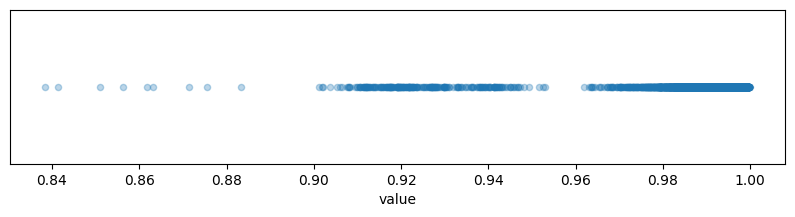
Probability mass assigned to the top-\(10\) tokens across \(1000\) random token sets drawn from \([1,100]\) without replacement. Note the discreteness of the two clusters separated at \(0.96\) probability.
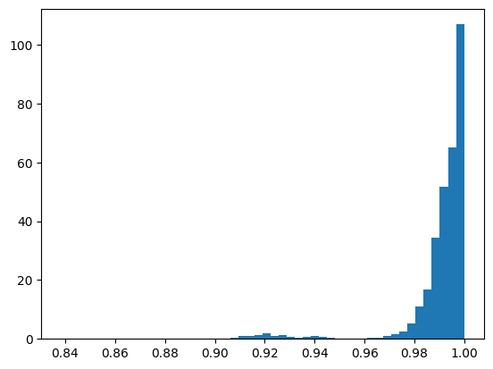
PDF of probability assigned to the top-\(10\) tokens across \(1000\) samples.
So we have a distinct rarely occurring cluster where the top-\(10\) probability mass falls below \(0.95\).
A typical top-\(20\) output distribution for a token set in the typical region looks as follows:
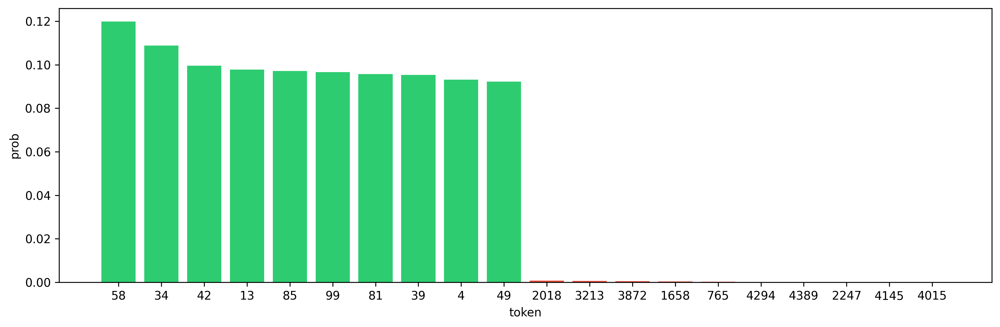
Distribution of top-\(20\) output probabilities on a typical set of top-\(10\) tokens. Nearly uniform probability assigned to the top-\(10\) tokens.
After \(100000\) samples of random token sets, \(2438\) had false positives, as defined by having probability mass below \(0.95\) on the top-\(10\) tokens (boundary of the bottom probability mass cluster above). Below is a random sample from that set of false positives:
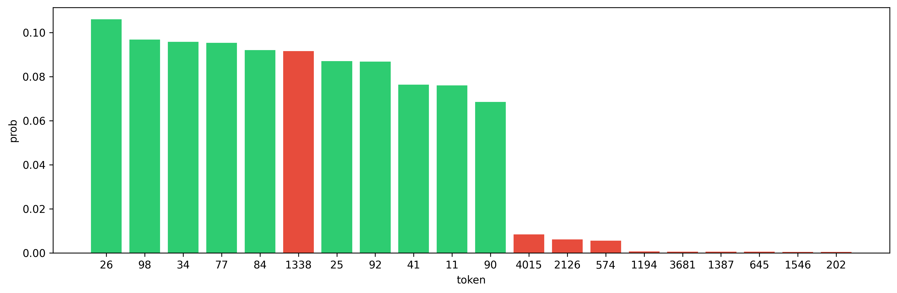
Distribution of top-\(20\) output probabilities when there is a single false positive leading to \(11\) tokens sharing probability approximately uniformly. Green tokens are those in the ground truth top-\(10\) token set, and red are those not in the top-\(10\) token set.
You can see how the network fairly robustly handles the false positive. It doesn't significantly disrupt the top-\(10\) token set. If the false positive weren't highlighted, we wouldn't be able to tell which token among the top-\(11\) it was, which is plausibly due to the discrete nature of the logits.
Interestingly, we can also provide \(< 10\) tokens in the input, and the model will handle it and give uniform probability among the set of given tokens. So \(10\) is more like a soft limit to the number of tokens the hashes are designed to be able to handle without breaking down.
Conditioning on there being even a single false positive, we expect the union of hashes to be large, which means we should expect other tokens to have large intersection with the union. We see this in the above figure, with significant probability mass going to tokens \(4015\), \(2126\), and \(574\) as well.
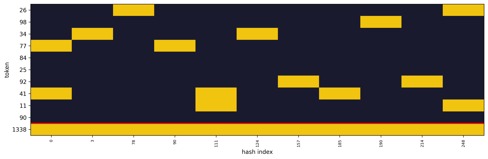
The hash of token \(1338\) (defined by the bimodal entries of \(W_E\text{mlp}_{\text{in}}\)) is covered by the union of the hashes of the top-\(10\) token set, so it triggers a false positive.
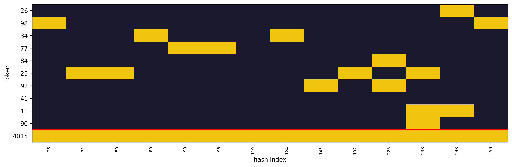
The hash of token \(4015\) is nearly covered by the hashes of the top-\(10\) token set, with a single element of the hash not covered. We see in the above that it gets about \(1\)% of the probability mass as a result.
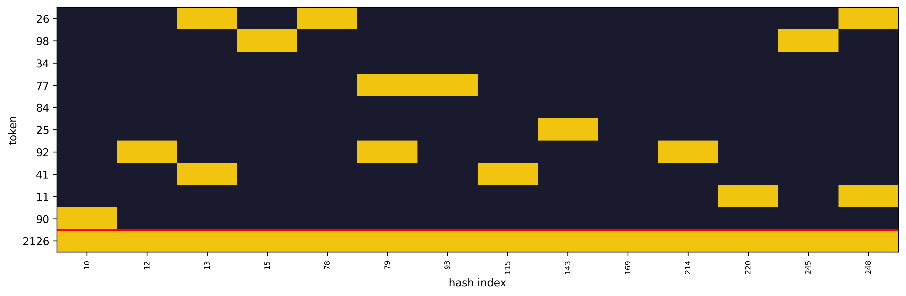
Ditto for token \(2126\)
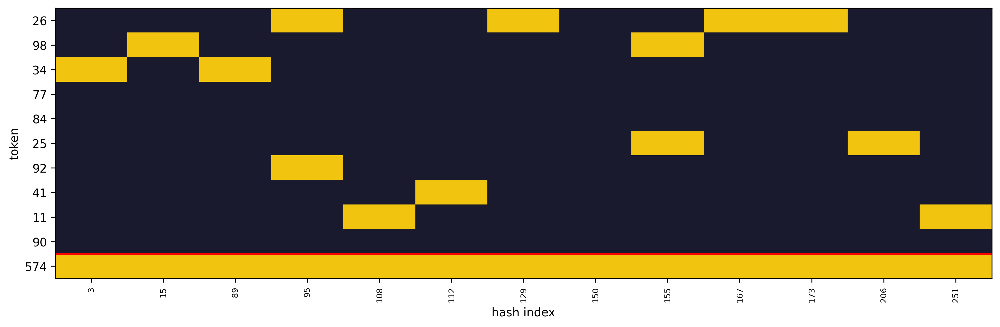
Token \(574\)
As a baseline, here is Token \(500\) on the same token set:
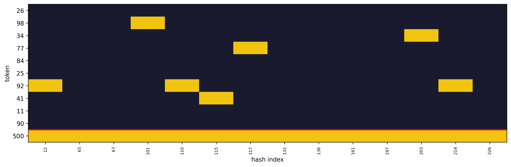
In a \(100000\) token set iteration I performed, none of them had probability above \(0.03\) assigned to a token where that token was not fully covered by the union of the hashes of the top-\(10\) tokens. It's quite interesting how similar in probability the \(3\) near misses above are, suggesting that there is a discrete probability assigned at each intersection size with the union of the hashes (indeed on other samples we get similar probabilities for near misses.)
Mechanistic analysis of the trained network
Now we have seen that the model seems to behave like a Bloom filter, we give a partial mechanistic analysis of how the trained weights help to implement the filter.

Learned \(\text{mlp}_{\text{in}}W_E\) matrix (truncated at first \(256\) tokens), when training via gradient descent on the top-k task. It is seemingly completely random, with a bimodal distribution of values.
Distribution of values in \(\text{mlp}_{\text{in}}W_E\) in the trained network.
The fact that the positive values vary in magnitude (in contrast to our construction, which uses a constant value \(T\) for the positive values) doesn't change the story very much. Remember we are primarily interested in extracting an indicator set of a union of token hashes, and so as long as each hidden layer neuron fires if and only if it is contained in the union of the token hashes, this story is ok.
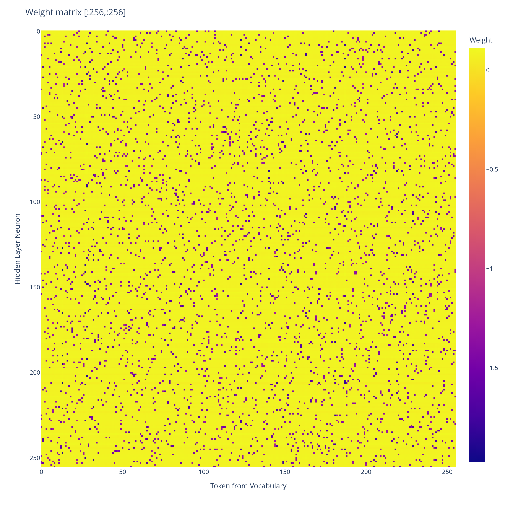
Learned \(W_U\text{mlp}_{\text{out}}\) matrix (truncated at first \(256\) tokens), when training on the top-k task. The mask of negative values is the transpose of the mask of positive values for the \(W_E\text{mlp}_{\text{in}}\) matrix (the raw values however are not transposes of each other.)
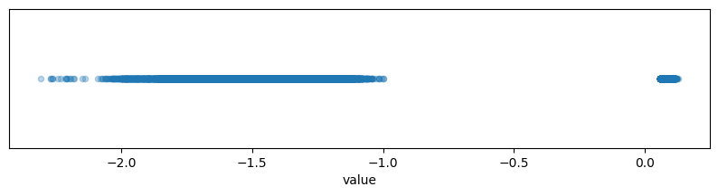
Distribution of values in \(W_U\text{mlp}_{\text{out}}\) in the trained network.
Since both \(-W_U\text{mlp}_{\text{out}}\) and \(\text{mlp}_{\text{in}}W_E\) seem to learn bimodal sets of values, we can compare the two masks.
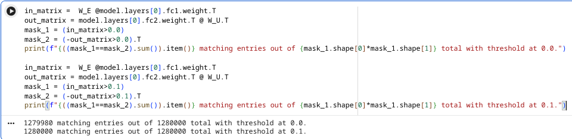
Perfect match between the transpose of one mask and the other mask.
So \(-W_U\text{mlp}_{\text{out}}\) learns a mask which is the transpose of the mask of \(\text{mlp}_{\text{in}}W_E\), analogously to our construction (Where \(\text{mlp}_{\text{in}}W_E = W_E = -W_U^T = -\text{mlp}_{\text{out}}^TW_U^T = (-W_U\text{mlp}_{\text{out}})^T\).)
To connect with our mechanistic story further, we linearly transform the residual stream \(x\) of the network, aiming to look like the one in Claude's animation.
If the trained network were acting as our construction expects it to, then \(-\text{mlp}_{\text{out}}\) would provide the change of basis matrix from the privileged hidden layer basis (Claude's basis :)) to the network's internal residual stream basis. So we look at \(-\text{mlp}_{\text{out}}^{-1}x\), where \(x\) is the residual stream, both before and after the hidden layer, for a sample input.
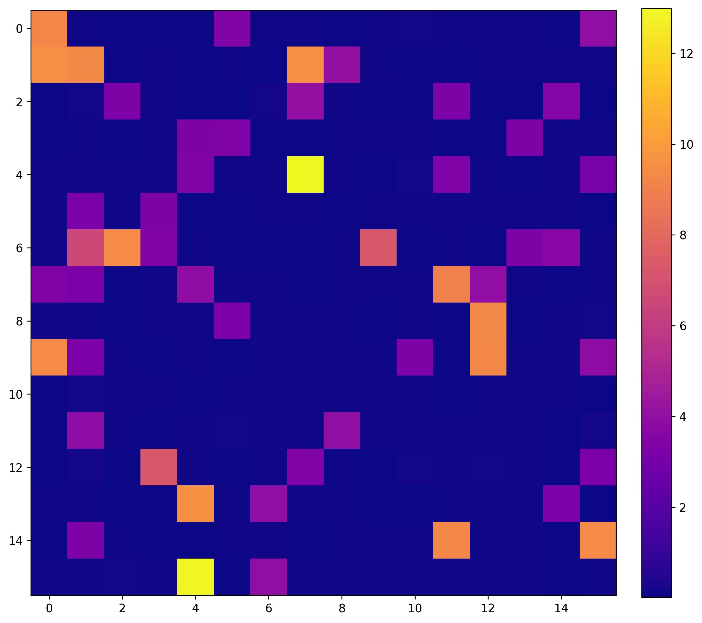
\({-\text{mlp}_{\text{output}}^{-1}x_{\text{initial}}}\). We arrange the vector of dimension \(256\) in a \(16 \times 16\) grid, but the rows and columns have no significance.
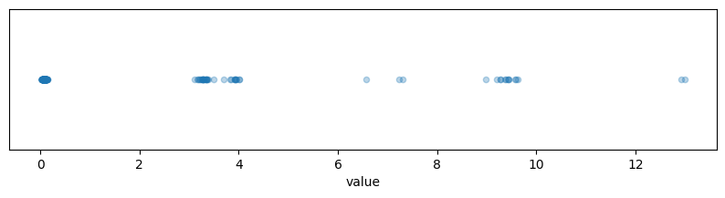
Distribution of values of \(-{\text{mlp}_{\text{out}}}^{-1}x_{\text{initial}}\)
\(x_{\text{initial}}\) is defined as the initial state of the residual stream. \(-\text{mlp}_{\text{out}}^{-1}x_{\text{initial}}\) corresponds to the first residual stream in Claude's animation.
For this input, a value is dark blue iff it doesn't belong to the union of the "hashes" (as given by the mask of \(W_E\text{mlp}_{\text{in}}\)) of the input tokens. This has been the case in all other inputs I've tried, though I have not rigorously proven this about the trained network.
Note that, just as in Claude's animation, among the dimensions contained in the union of the hashes, there is a wide range of possible values that are taken on. We have values ranging from \(3\) up to \(13\) among those contained in the union of the hashes. This is because hashes overlap at certain positions and so combine values, as well as due to variation in \(\alpha_i\).
There are discrete clusters in the distribution of values, which seems to correspond to the number of intersecting hashes at each position.
The job of the hidden layer seems to be to collapse this range in values to produce an indicator of the union of hashes.
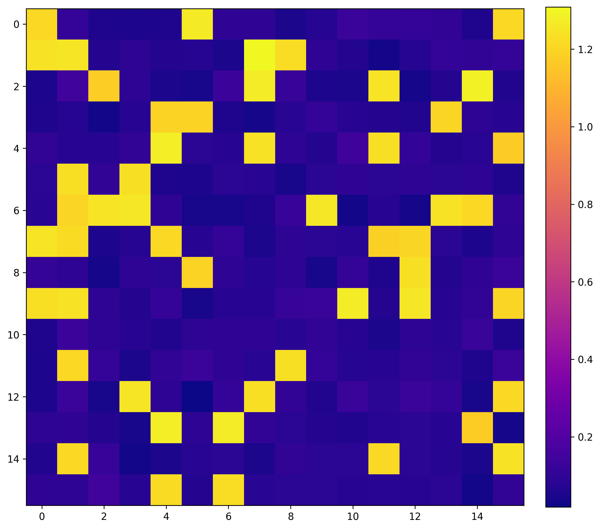
\(-{\text{mlp}_{\text{out}}}^{-1} x_{\text{final}}\) on same input as above.
This corresponds to the second residual stream in Claude's animation. \(x_{\text{final}}\) is the residual stream directly before applying the unembedding matrix \(W_U\).
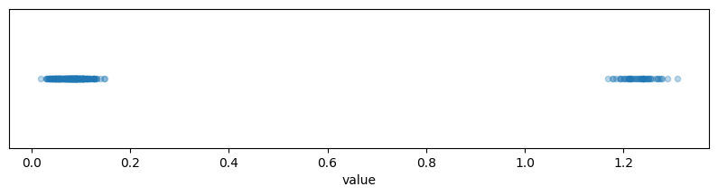
Distribution of values of \(-{\text{mlp}_{\text{out}}}^{-1}x_{\text{final}}\)
The hash values which in the initial residual stream were significantly above the others have been clamped, and the union of the hashes now lies in a fairly narrow range.
To get from \(-{\text{mlp}_{\text{out}}}^{-1}x_{\text{final}}\) to the final logits, we apply \(-W_U\text{mlp}_{\text{out}}\), which is given as before. So the \(i\)th logit is approximately a dot product of the clamped union of hashes \(-\text{mlp}_{\text{out}}^{-1} x_{\text{final}}\) with \(\text{hash}[i]\) (where \(\text{hash}[i]\) is determined by \(W_E\text{mlp}_{\text{in}}\)).
There can be a wide variance in the raw values of the hash containing matrix \(-W_U\text{mlp}_{\text{out}}\) as long as the sum of the hashes along each row (each corresponding to a token) weighted by the expected corresponding entries of \(-\text{mlp}_{\text{out}}^{-1} x_{\text{final}}\) is around the same across tokens.
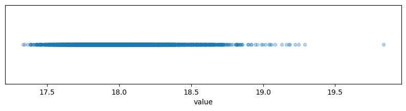
Values of \((-W_U\text{mlp}_{\text{out}})[i,\text{hash}[i]] @ \text{b}_{\text{in}}[\text{hash}[i]]\), where \(\text{hash}[i]\) of token \(i\) is defined as the hash determined by the weight matrix \(W_E\text{mlp}_{\text{in}}\). We use Pytorch notation here, with \(\text{hash}[i]\) being viewed as a tensor of indices.
The above is the dot product of the large positive terms in the \(i\)th row of \(-W_U\text{mlp}_{\text{out}}\) with the terms we expect at \(\text{hash}[i]\) at the final residual stream, supposing that the \(i\)th token is among the top-\(k\). This is not the exact correct thing to be looking at I don't think, because there is also noise terms from the terms outside of \(\text{hash}[i]\), but it should be the leading term, and it tells us that the top-\(k\) tokens end up with about the same logit contribution \(\pm0.5\). But \(\pm 0.5\) logits is pretty big and it seems to underestimate the performance of the model, suggesting there is something missing from our mechanistic analysis.
Nonetheless, since there is a gap of about \(-1.75\) logits between a hash that completely matches, and a hash that fails to match in just a single position (see the value plot of \(-W_U\text{mlp}_{\text{out}}\) above), our mechanistic analysis is fine grained enough to be able to argue why say false positives don't occur with high probability, even if we can't get precise enough to argue it's provably a Bloom filter.
We aren't fine grained enough to argue why we get so close to a uniform distribution over the top-\(k\) tokens, unfortunately :(. So our mechanistic explanation is incomplete here.
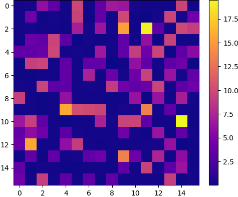
\({-\text{mlp}_{\text{output}}^{-1}x_{\text{initial}}}\) on a pathological token set. Again with the \(256\) dimensions arranged in a \(16 \times 16\) grid with no significance to the rows or columns.
What's interesting about the above figure is that it's pathological because the union of hashes is large. The union of the hashes being large means that it's more likely for the hashes of non top-\(k\) tokens to happen to lie inside it.
But the way that you get a large union of hashes is by having top-\(k\) hashes that don't intersect. In other words, on any given forward pass, we want top-\(k\) hashes to intersect as much as they can (globally we don't want this, though.)
Which is the opposite intuition from usual, where we want to minimise interference between features!
Conclusion and reflections
I find multiple things interesting about the solution to the task:
In contrast to other approaches that have been discussed for neural networks handling many more features than they have dimensions in the residual stream, the solution does not rely on with 100% probability having a bounded amount of error \(\delta\). Instead, it relies on having \(0\) error with \(1-\epsilon\) probability, and significant error with \(\epsilon\) probability. Bloom filters are fundamentally probabilistic structures, and with \(\epsilon\) probability they result in false positives (this translates to an erroneous token included in the top token set).
The scaling is a lot better behaved with this probabilistic approach. We get \(\delta\) MSE loss by scaling the width of the network by \(\log(\frac{1}{\delta})\), whereas traditional JL style superposition would scale the width polynomially in \(\frac{1}{\delta}\).
Because of the form of our solution to the task, the harder task of specifying an arbitrary conditional distribution over the top-\(k\) tokens (say as \(\text{Softmax}(\alpha_i)\)) with \(1-\epsilon\) probability can be reduced to the uniform case, with the size of the reduction not depending on \(d_{\text{vocab}}\). So the uniform distribution task is tracking the residual stream width required to output sparse probability distributions over large vocabularies. Indeed training a \(1\)-layer network to accomplish the harder task of specifying an arbitrary conditional distribution empirically results in a hidden layer identical to the uniform task.
It's always been a bit of a mystery to me how LLMs like GPT-2 with \(d_{\text{model}} << d_{\text{vocab}}\) can learn such accurate probability distributions, and this Bloom filter approach significantly reduces the mystery for me (I'm not saying that LLMs use Bloom filters, there is no evidence for this, I'm saying I'm no longer surprised that it is feasible).
More broadly, I'm working on probabilistic methods for performing computation in superposition. This was a fun toy case I found for showcasing the advantages of using a probabilistic approach. I view the result on \(1\)-layer networks as an initial piece of evidence that it's not absurd to hypothesise mechanisms which rely on probabilistic approaches as opposed to purely continuous ones.
Related work
Prior work - The Softmax Bottleneck Does Not Limit the Probabilities of the Most Likely Tokens - shows that with \(1-\epsilon\) probability when \(d = O(k (\log(N/\epsilon)))\), given a random Gaussian matrix \(W_U \in \mathbb{R}^{N} \times \mathbb{R}^{d}\) and a uniformly randomly drawn subset \(S \subset [N]\) of size \(k\), you can find a vector \(x \in \mathbb{R}^{d}\) such that \(y = W_Ux\) is constant on \(S\), and such that \(y_i < y_j\) if \(i \in [N] \setminus S\) and \(j \in S\).
They find \(x \in \mathbb{R}^{d}\) just by finding the unique solution to \((W_Ux)|_{S} = 1\) lying inside the row space of \(W_U[S]\) (which is given in closed form). The substance of the analysis is that with high probability this solution has higher logits on \(S\) than any of the surrounding tokens in \([N] \setminus S\) (though their proof uses some simplifying assumptions, but empirically it works so it's fine). By scaling \(x\), we can get arbitrarily close to \(\text{Softmax}(W_Ux)\) giving \(\frac{1}{k}\) probability to each of the tokens in \(S\).
I don't think it's mechanistically plausible that trained networks actually learn to find the \(x\) used in that paper's proof (and the paper isn't claiming it is). It involves taking the precise inverse of an input-dependent \(k \times k\) matrix. However, it did provide some inspiration for the construction given in this post.
Further work
Is it possible to fully understand the mechanism behind the \(1\)-layer model presented here? I'm personally satisfied that the network is implementing a Bloom filter, but can we prove it? Intuitively it should be easier than a lot of Mech Interp because the hidden layer is doing a quite simple operation.
What is the scaling for the density of the hashes that the model learns? How does this relate to theoretical Bloom filter density?
What mechanisms do real LLMs learn to output distributions? Modern LLMs increasingly have \(d_{\text{model}}\) of similar size to \(d_{\text{vocab}}\), so in theory they could use a single dimension per logit. But there's still incentives for them to use the fewest dimensions they can for producing the output distribution.